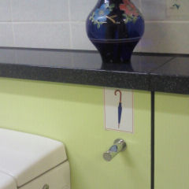

県内某ＳＡの
男子トイレの
傘掛け。
気の利いた設計だが
あまり普及してないので
傘のイラストが
ないとわからないのが
ツラい。
よく建物の入口に
大きな傘立てを
設置してあるが、
あれは、あれで
いざ、帰ろうとすると
どれが自分の傘なのか
認識出来ないという
ミステリー体験を
持っている人間も
多いのではないか。
私の場合は
濡れたほうが
妖力が強くなるので
傘は使う必要性は
ほとんど無い。
しかし、例えば、
書籍コーナーで
本を購入して
トイレに寄ると
その置き場所に困る。
文庫本とか新書ならば
この写真でいうと
花瓶の置かれた
上段の水平な部分に
置けるのだが、
サイズの大きな
ペラペラの雑誌が
置けない。
この金属の出っ張りは
傘以外のモノでも
使えそうだ。
デザインの勝利だ。